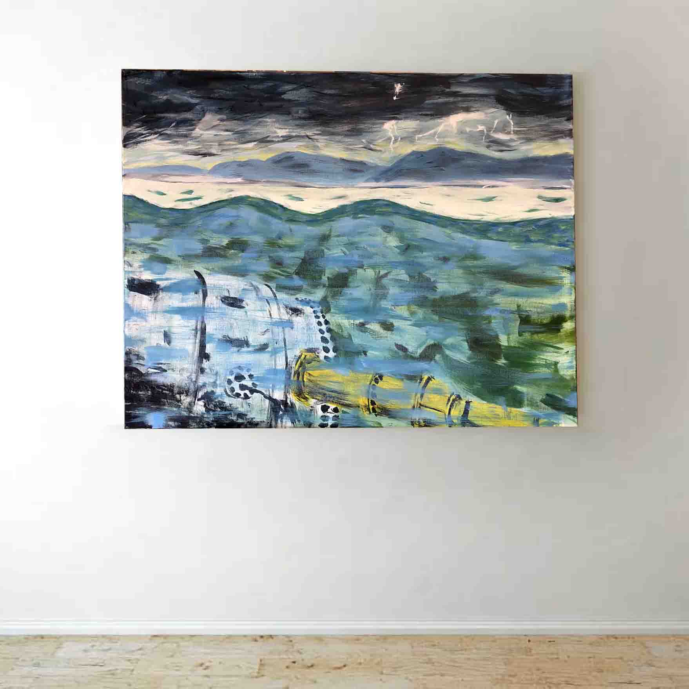

The Cloud Under the Sea
The "cloud" is submerged in the ocean.
In June, Microsoft sank a datacenter off the coast off the Orkney Islands in Scottland. "Datacenters are the backbone of the internet, the physical clouds of cloud computing where customers leverage economies of scale to securely store and process data, train machine learning models and run AI algorithms.” The idea seems promising. The cold water at the bottom of the ocean cools the datacenter allowing it to work more efficiently and with 40% of the world’s population living near the coast, the ability to deploy a datacenter off the coast could make it easy to provide computing power to many people.
The virtual and physical worlds are combining. So far we have operated with a so-what attitude towards corporate surveillance, but as we rely on computers to invade our lives what risks do we endure? Climate change can be used as an analogy to understand these privacy issues. In both cases, the aggregation of individual actions leads to societal harm. Instead, of a carbon footprint, we now leave a virtual footprint; every action we take on the Internet is meticulously watched, recorded, and analyzed. The newest ploy to collect our data is personal home “assistants” like Amazon Alexa and other products in the Internet of Things. While these services may improve many aspects of our lives, what cost does it take to get “smarter?” What decisions should we leave to humans?
My painting approaches these pressing issues. What does the analogy of the water cycle offer to the privacy conversation? In the painting, the clouds reflect each other: One under the water and one above. If the cloud is computing power, what is the rain and what are the other processes of the water cycle? In my image, there is a storm going on at sea. Climate change will bring on more intense storms, and so will privacy issues. My work is inspired by Trevor Paglen’s photo series on the cables that connect the internet, Marcus DeSieno “No Man's Land: Views From a Surveillance State,” and Banksy’s kitsch landscapes filled with CCTV camera as well as many thinkers, activists, and academics who work on privacy issues.

Check out the photograph above by Trevor Paglen and the related article by Wired here.